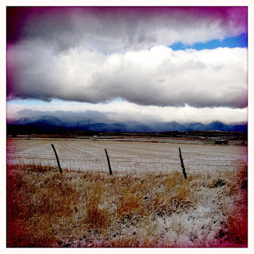
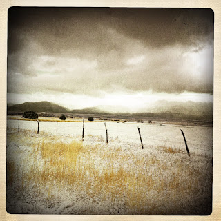
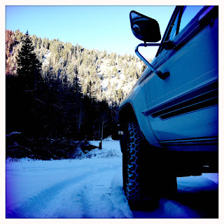

Recovered weblog entry
New Season Snow
With November hard upon us, the sun dipping lower toward the south in its austral season, and very little response from things formerly flourishing out-of-doors, the changing light and skies are a welcome diversion.


